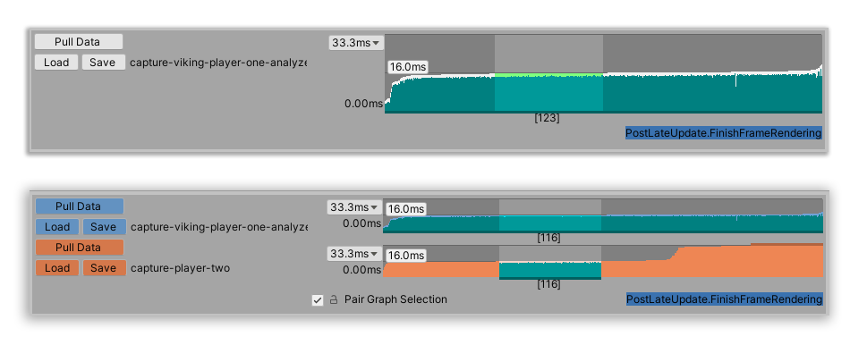

Ordering frames by length¶
This workflow explains how to order the frame data in the Profile Analyzer by frame length, shortest to longest, which results in an s-curve style graph. The Profile Analyzer groups frames with similar performance together, which enables you to create sub-ranges over a set of similar performing frames without including any outliers. This is particularly useful to normalize the data and to focus on only the shortest, longest, or average frames in the data set.
This workflow applies for both Single view and Compare view.
Step 1: Collect performance data to analyze¶
Open the Profile Analyzer window (menu: Window > Analysis > Profile Analyzer) and collect some profiling data. To pull data from an active profiling session, click the Pull Data button. This pulls in the current set of available frames from the Profiler. If you don’t have an active profile session, click the Open Profiler Window button, then load or record some data.
For more information on how to collect data, see the workflow documentation on Collecting and viewing data.
Step 2: Order the data set¶
If you are in the Compare view, enable the Pair Graph Selection checkbox. By default, the data set is ordered by frame number. To order the frames by their length, right click on a graph in the Frame Control pane, and select Order by Frame Duration.

The Frame Control context menu
The Profile Analyzer then orders the graph from shortest to longest frame.
Step 3: Select frames of interest¶
Click and drag on the graph to select a range of frames with similar performance from the middle of the distribution.

Top, the Frame Control pane in Single view, with the graph ordered by frame duration, and a range of frames selected. Bottom, the Frame Control pane in Compare view, with the graph ordered by frame duration, and a range of frames selected.
You can now use the Profile Analyzer to analyze data from frames that have a similar performance.